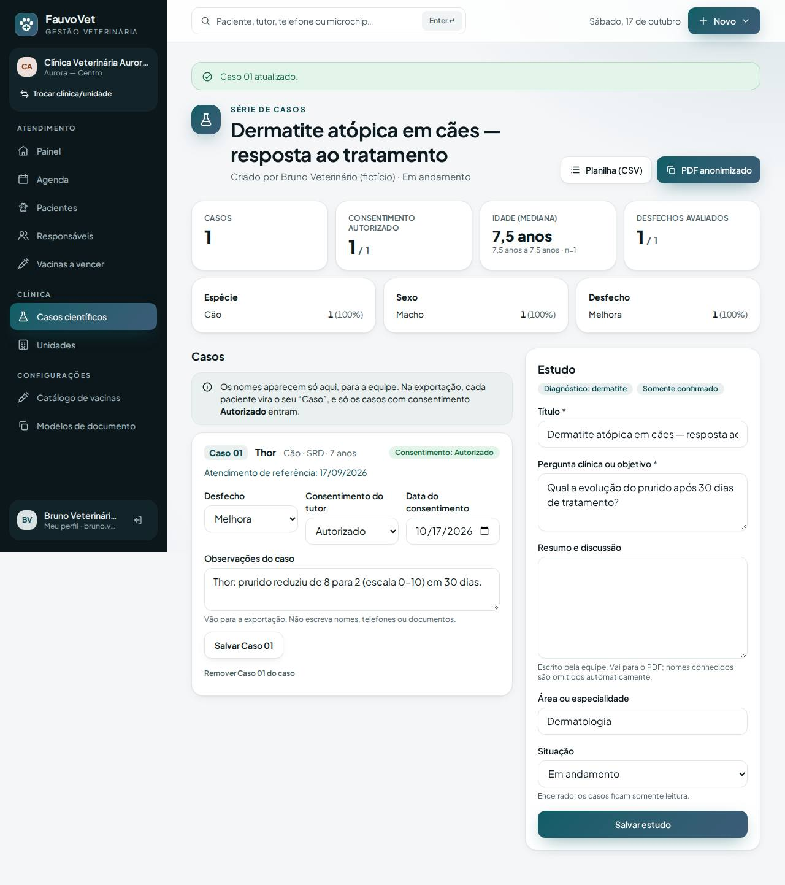
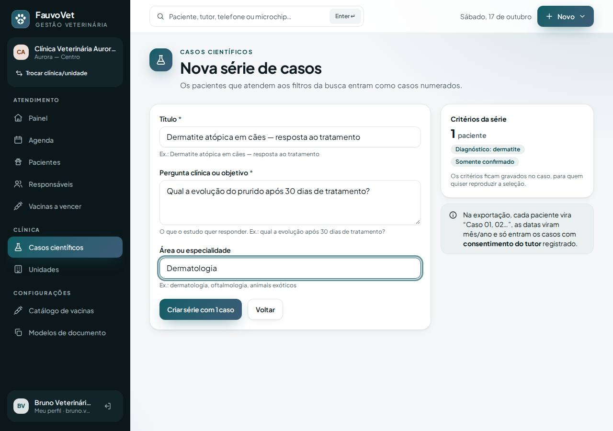
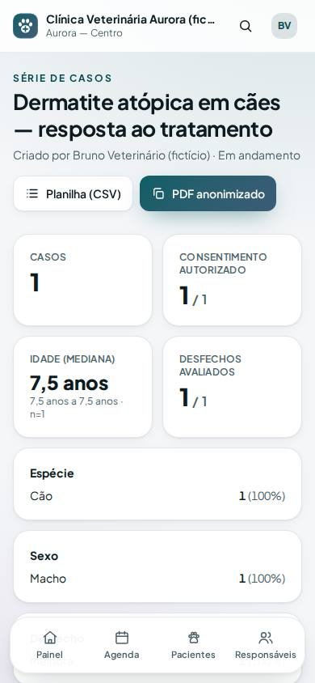

Casos científicos: séries e relatos a partir dos casos tratados pela clínica
ID: 2026-10-18-casos-cientificos · Data: 18/10/2026 · Versão: 0.11.0 · Módulo: Diferencial FauvoVet (ADR-015) · Estado: implementado e testado localmente; publicação a cargo do proprietário (seção 7)
1. Objetivo
Aproveitar o histórico da clínica para produzir ciência:
- agrupar casos já tratados (ex.: "dermatite atópica confirmada em cães") numa série de casos, ou transformar um atendimento interessante num relato de caso;
- registrar a pergunta clínica, o desfecho de cada caso e o consentimento do tutor;
- exportar tudo anonimizado, pronto para análise e publicação.
O sistema não interpreta nem conclui nada sozinho: o texto científico é sempre da equipe.



2. O que mudou
- Pacientes → filtros → Criar série de casos:
- os pacientes que atendem aos filtros entram como "Caso 01, 02…" (até 200);
- para cada um, o sistema guarda o atendimento de referência: o atendimento finalizado mais recente com o diagnóstico procurado;
- os critérios ficam gravados;
- uma série sem nenhum filtro (clínica inteira) ou sem pacientes é recusada.
- Atendimento finalizado → Criar relato de caso: o paciente desse atendimento entra como Caso 01. Rascunho não vira caso.
- Menu → Casos científicos, com lista e detalhe de cada série ou relato:
- estatísticas agregadas: número de casos, consentimentos, idade mediana (mín–máx) na referência, distribuição por espécie, sexo e desfecho;
- por caso: desfecho (resolvido, melhora, estável, piora, óbito, perda de seguimento), consentimento do tutor (pendente, autorizado ou recusado, com data) e observações;
- estudo: título, pergunta clínica, resumo e discussão, área, situação (encerrado = somente leitura);
- remover um caso da série não altera o prontuário.
- Exportação anonimizada (Planilha (CSV) e PDF anonimizado):
- cada caso traz espécie, raça, sexo, castração, idade na referência, mês/ano, peso, diagnósticos do atendimento de referência com a situação, desfecho e observações;
- nunca saem: nome do animal, responsável, telefone, documento, microchip, identificadores internos, datas exatas e texto livre do prontuário;
- só entram casos com consentimento Autorizado, e o rodapé informa quantos ficaram de fora;
- nas observações e no resumo, e-mails, números longos (telefone, CPF, microchip, datas) e nomes de pacientes e responsáveis do caso viram "[… omitido]";
- a planilha neutraliza células que começam com
=,+,-ou@(proteção contra fórmula maliciosa).
- Quem pode:
- veterinário e titular (
research:manage); - recepção, financeiro e gestão não acessam;
- criação, visualização, consentimento e exportação ficam na auditoria.
- veterinário e titular (
- Arquivos:
- migração
2026_10_18_000003_create_clinical_case_tables; - modelos
ClinicalCaseeClinicalCasePatient; app/Services/ClinicalCaseService.php,ClinicalCaseController, viewsresources/views/cases/*e íconeflask;PatientSearch::describe()ereferenceEncounters();x-textareapassou a marcar campo obrigatório com*;- testes
ClinicalCaseTest(8, sendo 2 de isolamento), E2Ecases.spec.tse axe dos casos; - ADR-015.
- migração
Dependências novas: nenhuma.
3. Pré-requisitos
Os mesmos dos incrementos anteriores. O PDF usa o dompdf já instalado.
Git Bash/macOS: NOT RUN.
4. Passo a passo (no seu computador)
cd ~/code/fauvovet→git pull --ff-only→pnpm db:start→pnpm db:migrate→pnpm db:seedpnpm dev→ entre comobruno.vet@aurora.exemplo.test→ Pacientes → Filtros avançados → diagnósticodermatite, situação Somente confirmado → Aplicar filtros → Criar série de casos.
5. Como testar
pnpm verify --e2e
pnpm test:tenant-isolation- Como Bruno:
- crie a série descrita no passo 4: aparece "Série de casos criada com 1 caso" e o Thor como Caso 01, com o atendimento de referência confirmado;
- baixe a Planilha (CSV): só o cabeçalho, porque o consentimento está pendente;
- no Caso 01, escolha Melhora e Autorizado e escreva "Thor melhorou, tutora ligou do 11 98765-4321"; salve;
- baixe o CSV de novo: aparece "Caso 01; Cão; SRD; …; [nome omitido] melhorou, tutora ligou do [número omitido]", sem nome, microchip ou data exata;
- abra o PDF anonimizado;
- em Situação, escolha Encerrado: os casos ficam somente leitura.
- Relato: abra um atendimento finalizado do Thor → Criar relato de caso.
- Como Carla (recepção): o menu não mostra Casos científicos e
/casosresponde 403. - Como Diana (clínica B): o endereço de um caso da clínica A responde 404, e uma série com
dermatiteé recusada (nenhum paciente na B).
6. Performance e usabilidade
- Criar série: 1 consulta para os pacientes (até 200), 1 para os atendimentos de referência e inserções numa transação.
- Tela do caso: estatísticas calculadas em memória sobre os casos já carregados (sem consultas extras por caso).
- Exportação: 2 consultas.
- Volume: NOT RUN; o limite de 200 casos por série mantém a tela e o PDF leves.
- Tela:
- no celular, as estatísticas vêm primeiro, depois o estudo e os casos;
- cada caso tem o próprio formulário, para salvar sem perder os outros;
- axe sem violações (lista, criação e detalhe) e nada passa da borda no celular.
7. Implantação na Locaweb (1 migração; 2 se a vacinação ainda não foi publicada)
- Terminal:
cd ~/code/fauvovet→git pull --ff-only→pnpm db:start→pnpm verify --e2e→pnpm deploy:package→pnpm deploy:copiar - Painel Locaweb: backup do banco.
- Terminal:
pnpm deploy:token. - FileZilla:
.envcomDEPLOY_TOOLS_ENABLED=true+ token novo → enviar → apagarbootstrap/cache/config.php(se existir). - FileZilla:
app-fauvovet(tudo excetostorage) epublic_html/fauvovet, com Sobrescrever. - Terminal:
diagnostico(pending_migrations: 1, ou2com a vacinação) →migrar→otimizar. - FileZilla:
DEPLOY_TOOLS_ENABLED=false→ enviar → apagarbootstrap/cache/config.php. - Terminal:
SMOKE_URL=https://dradeboragaldino.com.br/fauvovet pnpm smoke(5 PASS). - Se a vacinação também entrou: abra Configurações → Catálogo de vacinas e revise os protocolos.
Sem HTTPS válido, só dados fictícios. Antes de usar casos reais em publicação, colete o termo de consentimento do tutor e confira as exigências éticas aplicáveis.
8. Rollback
- Código: reenvie o pacote anterior em
.deploy/e rode o otimizar. As tabelas novas ficam sem uso e não afetam o resto. - Banco: restaure o backup do passo 2 (os casos criados depois somem; o prontuário não é afetado).
- Local:
git revertemigrate:rollback --step=1(só desenvolvimento).
9. Troubleshooting
| Sintoma | Causa e solução |
|---|---|
| Botão "Criar série de casos" não aparece | Aplique ao menos um filtro, ou a busca/espécie. O botão só aparece para veterinário e titular. |
| "Nenhum paciente atende a estes filtros" | Lembre que só atendimentos finalizados contam; ajuste os filtros. |
| CSV só com cabeçalho | Nenhum caso com consentimento Autorizado; registre o consentimento em cada caso. |
| "[nome omitido]" num termo clínico | Uma palavra coincide com o nome de um paciente ou responsável do caso. A omissão é de propósito (segurança); reescreva a frase. |
| "Caso encerrado: reabra para alterar" | Mude a situação do estudo para Em andamento. |
| Planilha com acentos estranhos | Abra pelo Excel com "Dados → De texto/CSV", em UTF-8, com separador ponto e vírgula. |
10. Evidências e status
| Verificação | Status | Detalhe |
|---|---|---|
pnpm verify --e2e | PASS | 9/9 etapas |
| PHPUnit | PASS | 164 testes (8 novos de casos) |
| Isolamento | PASS | 40 testes (2 novos: rotas A/B e FK composta) |
| E2E + axe + borda no celular | PASS | série → consentimento → CSV anonimizado; axe em lista, criação e detalhe |
| Revisão jurídica/ética (LGPD, consentimento, CEUA) | NOT RUN | Necessária antes de publicar estudos com dados reais |
| Incluir pacientes numa série já criada; testes estatísticos | NOT RUN | Registrados em docs/IDEAS.md |
Commit: registrado no docs/PROGRESS.md após a sincronização.
Próximo passo sugerido: publicar vacinação, busca e casos; depois, busca em texto livre do prontuário e anexos (Fase 2).